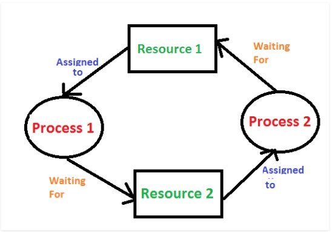

If all resources have only a single instance, then we can define a deadlock-detection algorithm that uses a variant of the resource-allocation graph, called a wait-for graph. This graph is obtained from the resource-allocation graph by removing the resource nodes and collapsing the appropriate edges. More precisely, an edge from P_i to P_j in a wait-for graph implies that process P_i is waiting for process P_j to release a resource that P_i needs. As before, a deadlock exists in the system if and only if the wait-for graph contains a cycle. To detect deadlocks, the system needs to maintain the wait-for graph and periodically invoke an algorithm that searches for a cycle in the graph. If this graph contains one or more cycles (knots), a deadlock exists. Any process that is part of a cycle is deadlocked. If no cycles exist, the system is not deadlocked.
It is a banker algorithm used to avoid deadlock and allocate resources safely to each process in the computer system. The 'S-State' examines all possible tests or activities before deciding whether the allocation should be allowed to each process. It also helps the operating system to successfully share the resources between all the processes. The banker's algorithm is named because it checks whether a person should be sanctioned a loan amount or not to help the bank system safely simulate allocation resources.